El Jardín Botánico de Apía tiene un área aproximada de 1,8 hectáreas, se localiza a 600 de la plaza principal de Apía, municipio ubicado en la vertiente oriental de la Cordillera Occidental colombiana a 65 km al norte de Pereira aproximadamente, a una altitud y temperatura media de 1630 msnm y 20°C respectivamente.
Fue creado por el acuerdo del concejo municipal número 020 del 27 de noviembre de 1987 y se destinó como un área de conservación y clasificación de plantas nativas de la región, con fines didácticos, científicos y ornamentales. Durante varios años se realizaron actividades aisladas de conservación y educación ambiental en el sitio, pero en la actualidad se ha aumentado en el número de individuos y especies de flora, gracias a la figura de administración bajo comodato con la ONG Municipal Vida Silvestre.
En El Jardín Botánico de Apía se pueden observar individuos de flora de más de 70 especies, principalmente de las familias fabaceae, melastomataceae, solanaceae, rubiaceae, arecaceae y poaceae, también es un espacio ideal para el avistamiento de aves y, aunque no existe un inventario de fauna actualizado, existen indicios de la presencia o paso por el lugar de pequeños mamíferos como zarigüellas, comadrejas, ardillas, zorritos, y anfibios y reptiles de menor tamaño.


El Jardín Botánico de Balboa tiene un área aproximada de 1,5 hectáreas, se ubica a 500 metros de la plaza principal de Balboa, municipio ubicado en la vertiente oriental de la Cordillera Occidental colombiana a 50 km al noroccidente de Pereira aproximadamente, a una altitud y temperatura media de 1530 msnm y 22°C respectivamente.
Creado mediante acuerdo del concejo municipal número 034 del 27 de mayo de 1998, se destinó a la recolección, conservación y clasificación taxonómica de plantas nativas y exóticas con el fines didácticos, científicos y turísticos. Entre los años 2013-2014 se inicia un proceso de acompañamiento y apoyo directo de CARDER a través del POA de Áreas Protegidas con actividades puntuales como: Embellecimiento de senderos, fortalecimiento del vivero de propagación de especies forestales nativas, talleres de capacitación a comunidad educativa del municipio, intercambio de experiencias, educación ambiental dirigida a comunidad en general, jornadas de siembra, recuperación de infraestructura e inventario forestal.
En los senderos del Jardín Botánico de Balboa se pueden observar individuos de flora de más encontraron 23 Familias, 40 géneros y 45 especies, también se han visto algunas especies de aves, pequeños mamíferos como comadrejas, ardillas, zorritos, y anfibios y reptiles de menor tamaño.


 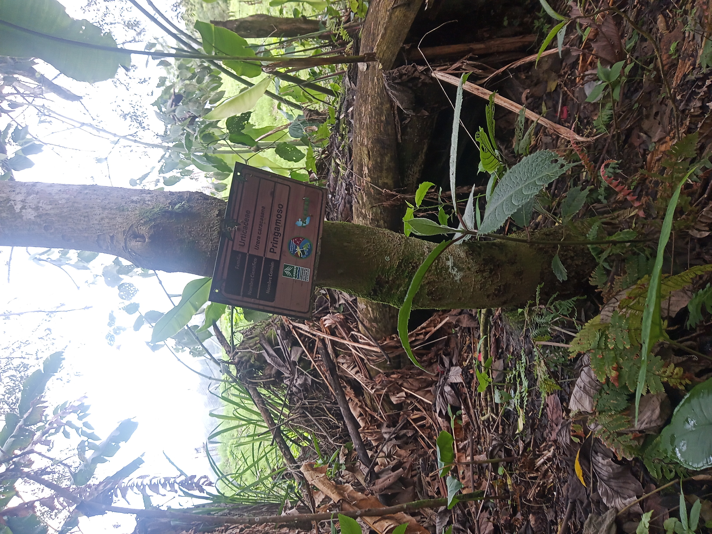
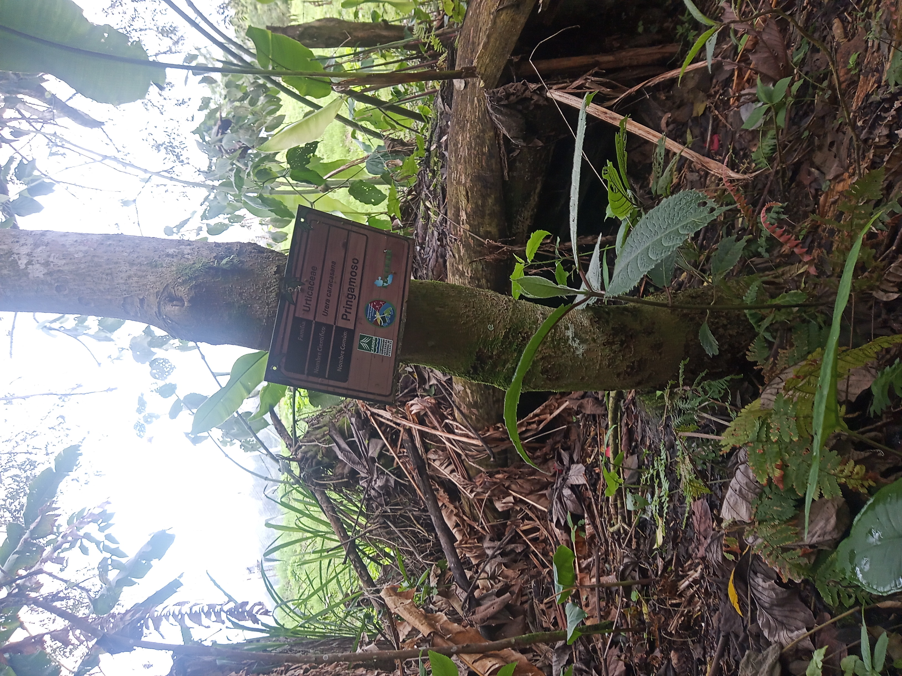


 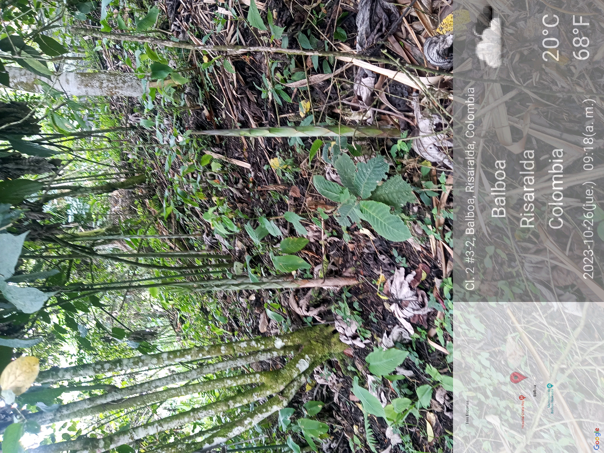
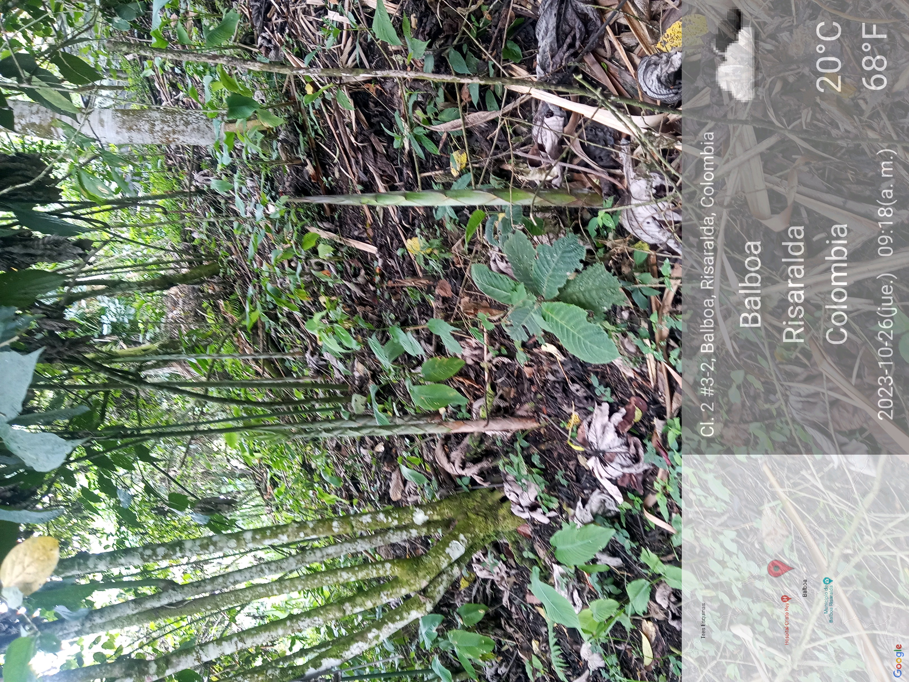
 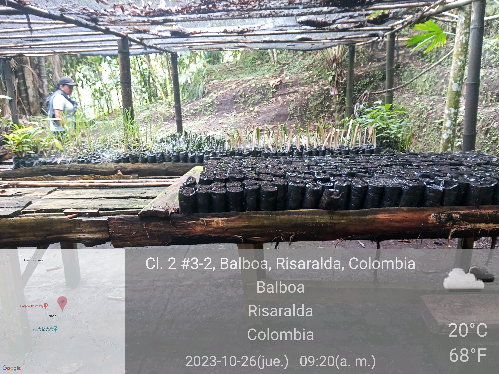
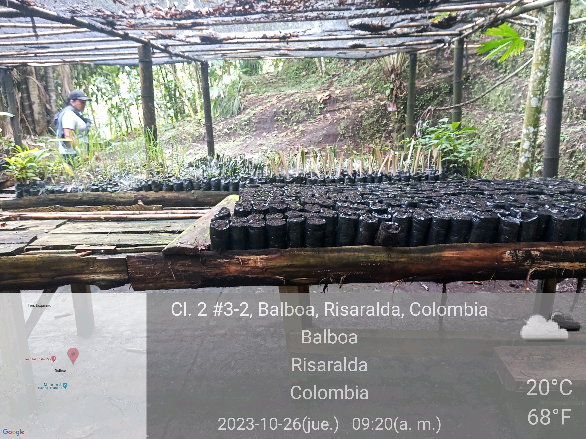

El Jardín Botánico José Celestino Mutis cuenta con un área aproximada de 2,8 hectáreas y se localiza a 1 km de la plaza principal de Belén de Umbría, municipio ubicado en la vertiente oriental de la Cordillera Occidental colombiana a aproximadamente 70 km al norte de Pereira, a una altitud y temperatura medias de 1620 msnm y 23°C respectivamente.
Fue creado mediante acuerdo del concejo municipal número 089 marzo 13 de 1987, se destinó a la recolección, conservación y clasificación de plantas nativas de le región con el fines didácticos, científicos, estéticos y de protección del medio ambiente. Durante años estuvo a cargo de una ONG ambiental del municipio, periodo en el que fue enriquecida la colección de plantas vivas. En la actualidad, el Jardín funciona como área de conservación de algunas especies vegetales y animales, se encuentra en proceso de renovación de infraestructura y está a cargo de administración municipal.
En el Jardín Botánico José Celestino Mutis de Belén de Umbría se pueden observar individuos de flora de más de 50 familias y 70 especies, al igual que especies de aves, pequeños mamíferos, anfibios y reptiles de menor tamaño.


 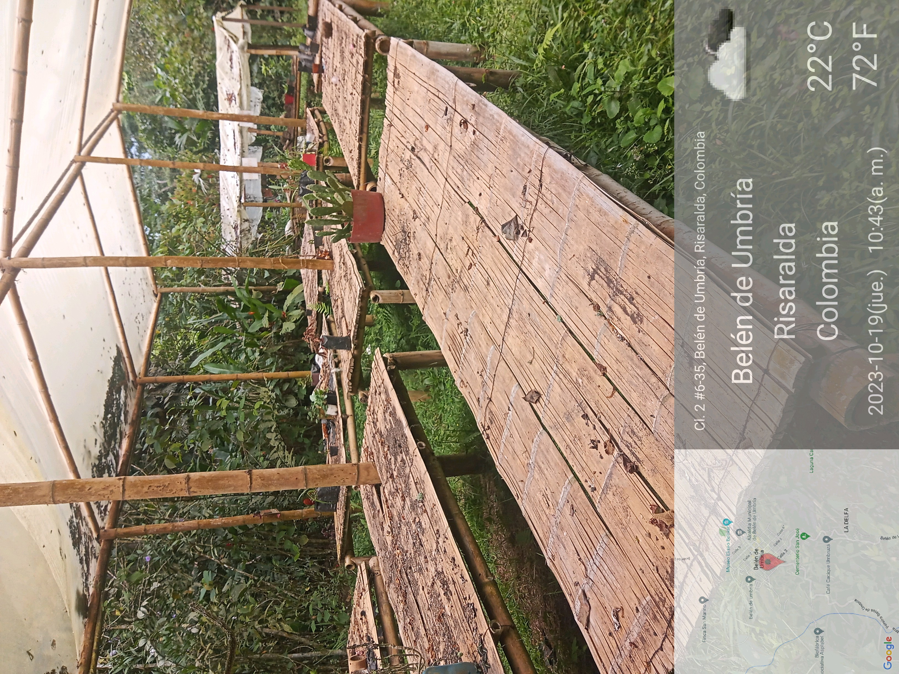
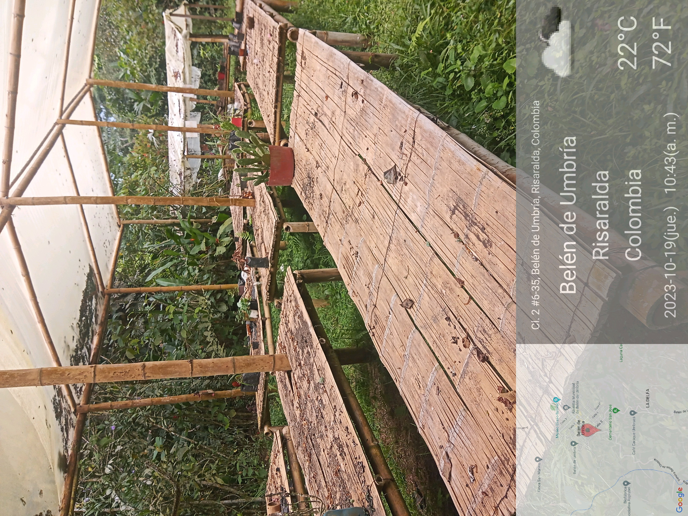


 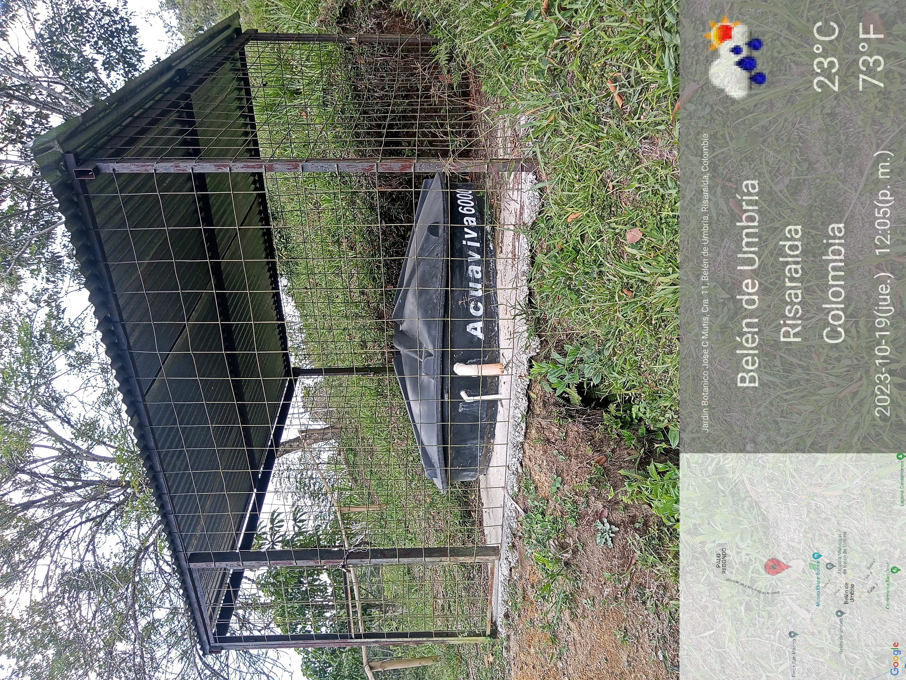
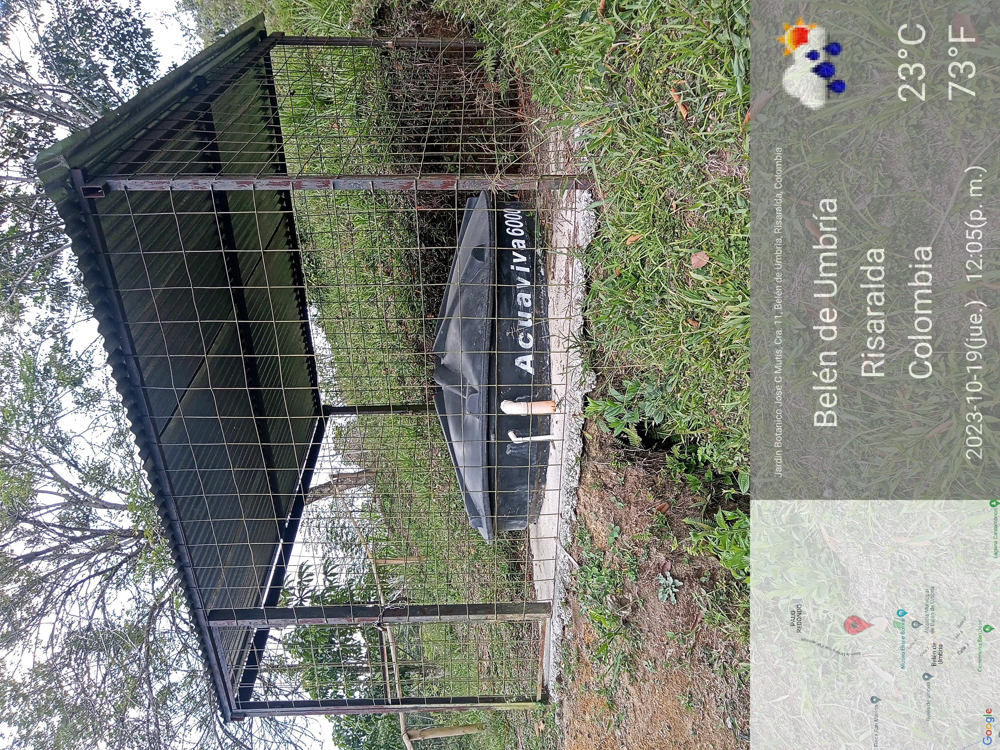


El Jardín Botánico Gamonrá tiene un área aproximada de 12 hectáreas, se localiza a 1 Km de la cabecera municipal de Guática, municipio ubicado en la vertiente oriental de la Cordillera Occidental colombiana a 90 km al norte de Pereira, a una altitud y temperatura media de 1820 msnm y 20°C respectivamente.
Fue creado como Jardín Botánico para promover la conservación de la biodiversidad, el agua y el suelo y la educación ambiental, pero a través de los años ha adquirido vocación de lugar de esparcimiento y recreación.
Sin embargo, la Alcaldía Municipal oficializó su creación como Jardín Botánico mediante Resolución 010 del 30 de enero de 2007. Cuenta con una zona que tiene una importante variedad de plantas de diferentes especies y con un sendero por el cual se puede recorrer toda el área, tanto la dedicada a la conservación de especies de flora, como la destinada a recreación, esparcimiento y turismo de naturaleza.


El Jardín Botánico Sabio Caldas tiene un área aproximada de 25.600 m2, se localiza a 300 metros de la plaza principal de La Celia, municipio ubicado en la vertiente oriental de la Cordillera Occidental aproximadamente a 67 Km al noroccidente de Pereira, a una altitud y temperatura media de 1380 msnm y 22°C respectivamente.
Fue creado, al igual que otros jardines botánicos de Risaralda, para promover la conservación de la biodiversidad, el agua y el suelo y la educación ambiental, pero con el tiempo ha adquirido vocación de lugar de esparcimiento y recreación, sobre todo para los niños por sus juegos infantiles y cercanía al coliseo y la plaza principal.
Cuenta con una pequeña variedad de plantas de diferentes especies, un sendero por el cual se puede recorrer toda el área y disfrutar de una oferta ambiental en la que se destaca la variedad de flora presente en el área. Una identificación preliminar permitió establecer que existen al menos 75 especies de más de 70 géneros y 40 familias.


 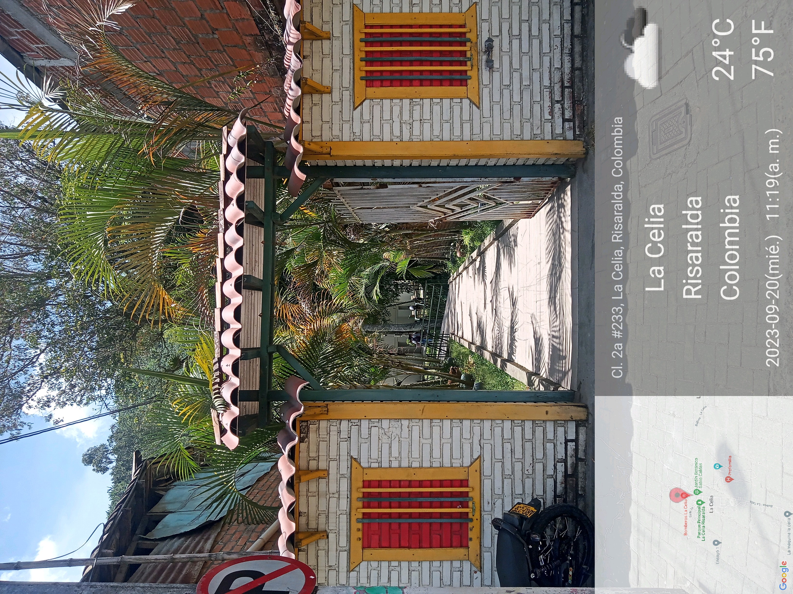
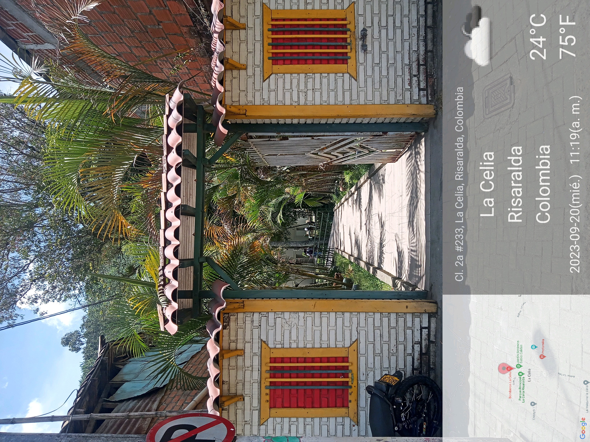


 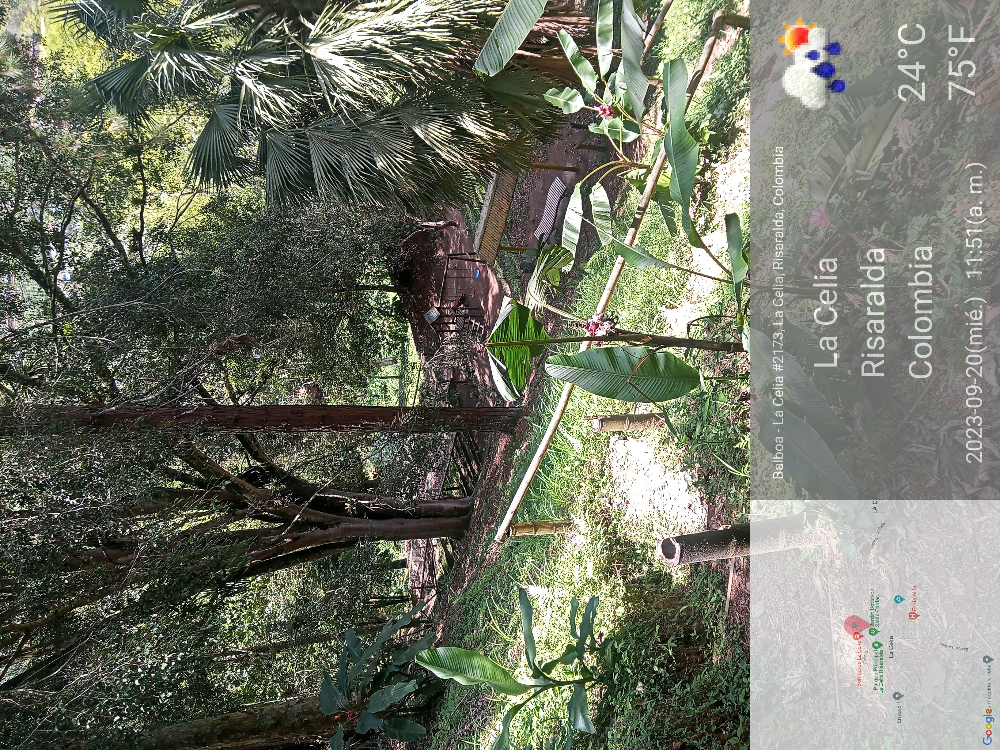
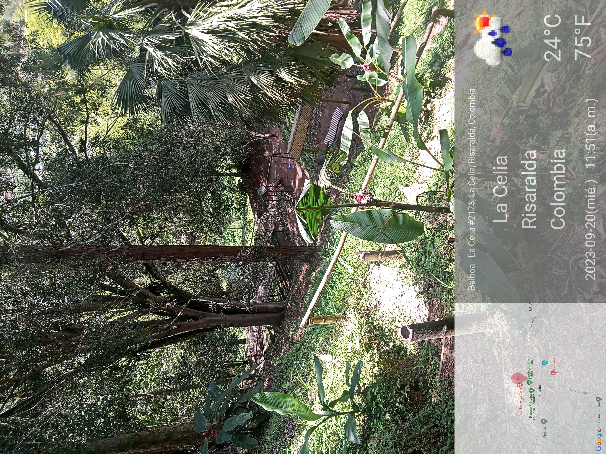


El Jardín Botánico de Marsella se encuentra localizado dentro de la cabecera municipal, aproximadamente 30 km al norte de Pereira, su área es en su mayoría montañosa, y pertenece a la vertiente occidental de la cordillera Central, con una altitud de 1510 msnm y una temperatura media de 21°C.
Fue fundado mediante el acuerdo del concejo municipal N° 004 del 15 de diciembre de 1979 en un área de 4.6 Ha. donde anteriormente funcionaba el Parque Infantil, y sus funciones principales eran integrar los servicios de dicho parque con las del jardín botánico mediante la conservación y clasificación de plantas nativas de la región con fines didácticos científicos y estéticos.
El Jardín Botánico tuvo su época de esplendor y mayor reconocimiento a finales de la década de los 80 (después de ser premiado Marsella con el título de municipio verde de Colombia) y finales de los años 90, logrando captar y reinvertir importantes recursos económicos gracias a la entrada de los turistas, y a un innovador parque de juegos tecnológicos amigables con el medio ambiente.
Mediante acuerdo del concejo municipal 025 el 21 de agosto de 2004, se modificó el acuerdo de creación y se destinó a la conservación y clasificación de plantas nativas de le región con el fines didácticos, científicos y estéticos.


 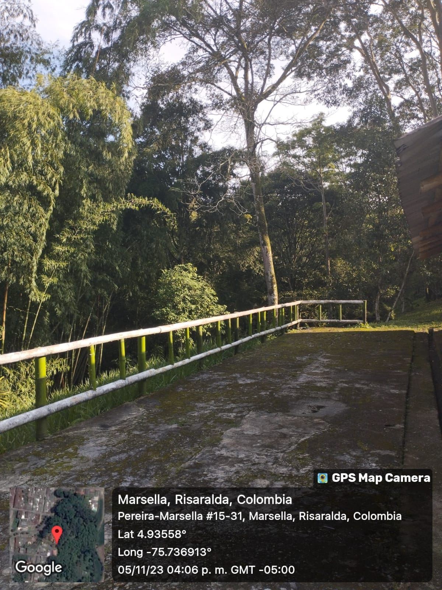
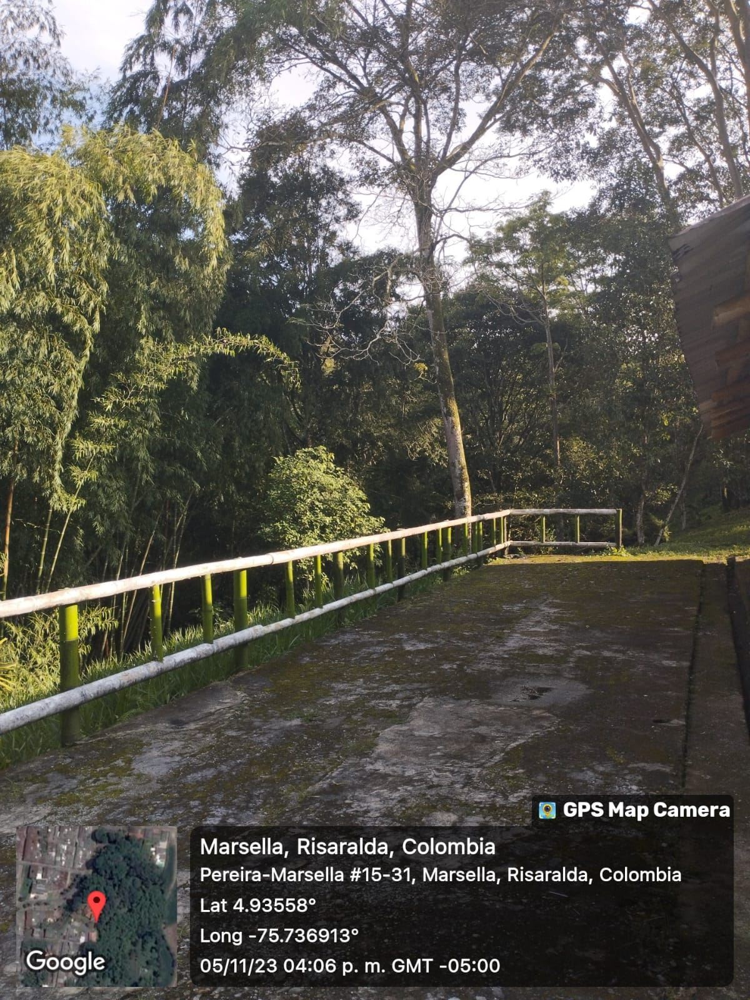


La Universidad Tecnológica de Pereira (UTP) en la década de los años 70 inició la conformación del Jardín Botánico Silvestre (JBUTP) mediante la siembra de flora nativa en terrenos que habían desarrollado un proceso de sucesión natural y para los cuales, el Consejo Superior de la Institución legitimó el proceso con la resolución 020 de 1983 para un área aproximada de 12.7 hectáreas del campus universitario. En 1999 el JBUTP inició una nueva fase de desarrollo, auspiciada por la Rectoría y la Vicerrectoría Administrativa de la institución, que le permitió obtener el concepto técnico de favorable como Jardín Botánico por parte del Instituto de Investigación de Recursos Biológicos "Alexander von Humboldt" (IAvH) y posteriormente el Permiso Ambiental de Funcionamiento con Resolución 0468 de 2000 de la Corporación Autónoma Regional de Risaralda CARDER. En ese mismo año, ingresó a la Red Nacional de Jardines Botánicos de Colombia (RNJBC).
Desde entonces, el JBUTP ha desarrollado, a través de sus programas de conservación, investigación y educación, importantes acciones en pro de la diversidad biológica con comunidades locales y regionales, y entidades nacionales e internacionales. También se ha transformado en un escenario educativo y turístico, que pretende concienciar a diferentes públicos en torno a la conservación, manejo y aprovechamiento sostenible de nuestro patrimonio natural y cultural.

El Jardín Botánico Cuna de Venus del Tatamá se encuentra localizado aproximadamente a 2 km de la cabecera municipal de Pueblo Rico, municipio de Risaralda ubicado a aproximadamente 95 km al noroeste de Pereira, en la vertiente oriental de la cordillera occidental, a una altitud de 1560 msnm y con temperatura promedio de 20°C.
La vegetación presente en el sitio proviene de regeneración natural de especies de esta zona del departamento y de algunos individuos que han sido sembrados. Actualmente está cargo de la Institución Educativa San Pablo y de la Asociación de Interpretes Ambientales Paimadó.
Al recorrer el Jardín Botánico Cuna de Venus del Tatamá se pueden observar 70 especies diferentes de flora, correspondientes a 41 familias y 60 géneros.


El Jardín Botánico Albeiro Manco Manzo tiene un área aproximada de 9600 m2, se localiza a 1,8 Km de la cabecera municipal de Quinchía, municipio ubicado en la vertiente oriental de la Cordillera Occidental colombiana a 100 km al norte de Pereira aproximadamente, a una altitud y temperatura media de 1825 msnm y 18°C respectivamente.
Fue fundado el 11 de agosto de 1979 como un vivero forestal con la idea de propagar especies nativas y promover la conservación de la biodiversidad, el agua y el suelo. Posteriormente, al sembrarse gran variedad de plantas de diferentes especies y construirse un sendero que recorre toda su área, fue nombrado como Jardín Botánico. Es importante destacar que gran parte del aumento en el número de individuos y especies de flora se debe al trabajo realizado con enorme sentido de pertenencia por más de 30 años por el señor Albeiro Manco Manzo, labor que fue reconocida por el Concejo Municipal otorgándole su nombre al Jardín Botánico.
Durante varios años se realizaron actividades de conservación, investigación aplicada (vivero) y educación ambiental en el sitio, lo que motivo al Concejo Municipal a crearlo oficialmente como Jardín Botánico mediante Acuerdo número 011 del 2000. Actualmente su administración está en proceso de entrega bajo la figura de comodato a una ONG Ambiental del municipio.
El Jardín Botánico Albeiro Manco Manzo cuenta con una importante oferta ambiental, destacándose principalmente la gran diversidad de flora en un área relativamente pequeña. Una identificación preliminar permite establecer que existen al menos 150 especies de más de 100 géneros y 60 familias.


 .
.

 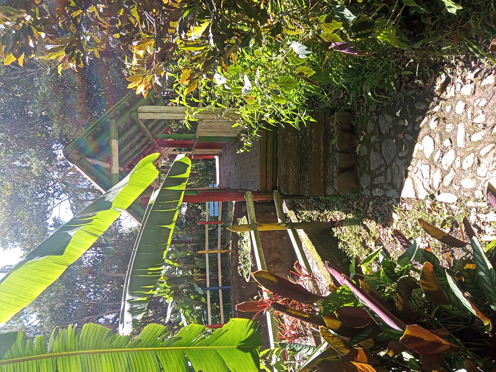
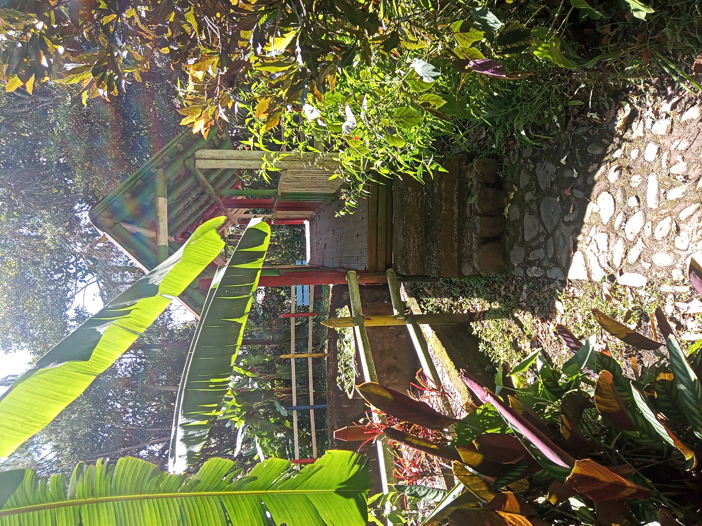


El Proyecto Jardín Botánico UNISARC es una iniciativa institucional de la Corporación Universitaria Santa Rosa de Cabal UNISARC liderada por el Grupo de Investigación en Biología de la conservación y Biotecnología, que tiene como misión aportar al conocimiento y conservación de las plantas silvestres y cultivadas del paisaje rural cafetero de Risaralda, las cuales son importantes para el desarrollo social y económico de la región, a través de la promoción de actividades de investigación, docencia y proyección social.
El jardín Botánico UNISARC está ubicado en la Granja La María, a 2 km del casco urbano de Santa Rosa de Cabal. El área destinada a la conservación es de 5,6 hectáreas e incluye zonas con colección etnobotánica, colección de bosque subandino, arboreto y agroecosistema cafetero, los cuales se pueden recorrer a través de un sendero de 1100 metros aproximadamente.
El Jardín Botánico UNISARC cuenta con gran diversidad de flora, de al menos 150 especies de más de 100 géneros y 60 familias.